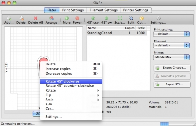

Release notes for 1.2.0 (2014-08-03)
New features:
- Incremental real-time slicing: when you change a setting, slicing doesn’t restart from scratch but only recalculates the affected parts. Also, when repositioning objects in plater or changing most options no recalculation is needed at all
- Toolpaths preview
- 3D preview of plater
- Customizable bed shape (rectangular, circular, or completely custom)
- New 3D honeycomb fill pattern (credits to David Eccles/gringer for his research work, #1646)
- Rotate/mirror/scale around X,Y,Z
- New XY Size Compensation option for handling dimensional tolerance
- Separate extrusion width setting for external perimeters (defaults to a thin extrusion for better quality, while internal loops use a thicker extrusion for better adhesion)
- Contextual menu when right-clicking an item in plater
- New –split command line option
Improvements:
- Avoid crossing perimeters is now much faster (but more work is planned on it)
- Option controls are enabled/disabled dynamically according to their dependency from others
- Perimeters of adjacent volumes having the same settings are merged
- Skirt is printed outside brim to prevent conflicts (#2157)
- Removed duplicated M204 commands (#2183)
Changes:
- A minor change was applied in flow math that should reduce thickness of external perimeters by 0.02-0.06mm thus reducing dimensional issues for holes
- The “Combine STL files into multi-material AMF file” command was removed since the new Object Settings dialog provides a more flexible and interactive way for loading multi-part objects
- Collision checks are relaxed when Detect thin walls is disabled, for faster processing
Bugfix:
- Some locale issues were arising when loading config files
3D plater:

Toolpaths preview:

Bed shape customization:

3D honeycomb infill:

Contextual menu:

Cutting plane: